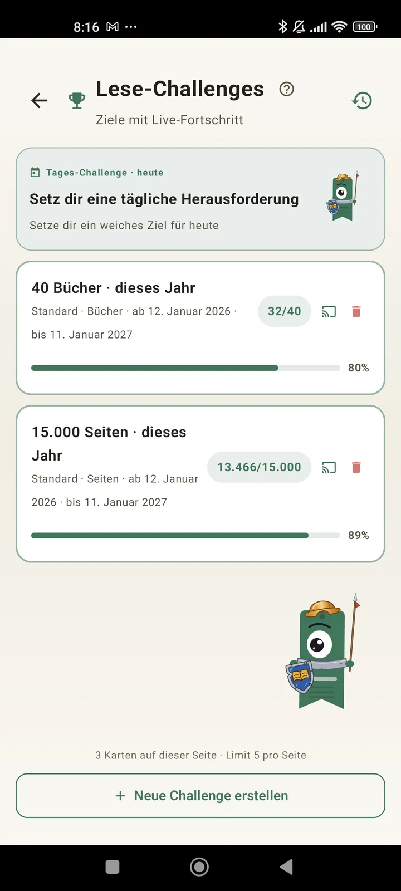

Lerne dich als Leser kennen
Challenges, Bingos, Widgets und mehr, damit du das Beste aus deinem Lesen herausholst. Neu in 3.7: Widgets für Challenges und Bingo.

Lese-Challenges
Setz dir Ziele nach Seiten, Serien oder Genres. Bis zu 15 aktive Challenges kostenlos, unbegrenzt mit Pro. Dazu eine anpassbare tägliche Challenge, die nicht zum Limit zählt.

Tägliche Challenge
Jeden Tag ein neues Ziel. Schließ die Challenge vor Mitternacht ab, damit deine Serie weiterläuft.

Lese-Bingo
Jeden Monat zwei neue Bingos mit thematischen Feldern. Vervollständige Reihen, Spalten oder die ganze Karte.

Wochenübersicht
Jeden Montag ein Blick auf deine Woche: gelesene Seiten, Gesamtzeit, Serie und der Vergleich zur Vorwoche.

Monatsrückblick
Wenn ein Monat endet, fasst Lecturameter ihn zusammen: Seiten, Zeit, beendete Bücher, dein Tempo Tag für Tag und dein Buch des Monats.

Bingo-Widget Pro
Die Bingokarte des Monats, immer im Blick, mit den Feldern, die du geschafft hast, und den Linien, die du vervollständigt hast.

Buch-Widget Kostenlos
Sieh das Buch, das du gerade liest, direkt auf dem Startbildschirm: Cover, Titel, Autor, Seiten und Fortschritt in Prozent, immer aktuell. Die Größe lässt sich anpassen, damit es überall hinpasst.
Ehrlich, Alter, die App ist wie Therapie. Ich habe früher ein paar Seiten am Tag gelesen, jetzt sind es etwa 20 Seiten am Tag, und es wird immer besserFeedback eines Nutzers, per E-Mail geschickt

Monatsvergleich Pro
Ein schneller Blick auf deine letzten Monate, ohne die App zu öffnen. Balken mit den Seiten jedes Monats, der aktuelle hervorgehoben, damit du auf einen Blick siehst, ob du diesen Monat besser oder schlechter liegst als im letzten.

Challenges-Widget Pro
Deine aktiven Challenges und ihr Fortschritt auf dem Startbildschirm. Welche angezeigt werden, wählst du im Bereich Herausforderungen.